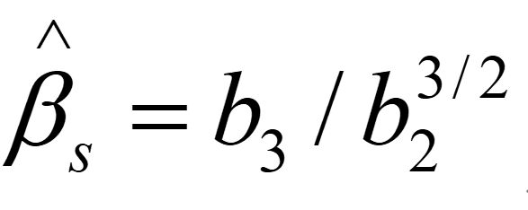
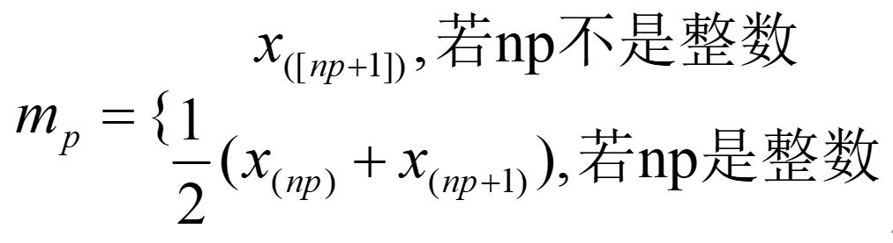

1、输入数据的时候，允许小数、整数、分数的任意混合输入，可以以中文逗号，英文逗号，空格，回车为分隔符，可以无限制使用空格，例如下面的输入也是合法的：
0.2 0.3 0.2，0.5 , 1/2 ， 2 0.5，3 2/7
2、请输入合法的分数，仅能识别形如： 1/2，-1/2 这样的分数，不能识别形如-1/-2 ， 1/-2 ，（-1）/（-2） ， -1/（-2）等显然不是碳基生物能写出来的分数形式；
3、不要以除空格以外的任何符号进行结尾。数据输完之后不需要加一个分号或者句号；
4、你所输入的数据都将被当做小数处理，即使你全部输入都是分数；
5、计算结果都做过这样的处理：最终结果保留四位小数，去掉了多余的0；
6、请保证所输入的各组数据的数据数目是一致的；
7、单因子方差分析的输入框中在输入不同水平的数据时请用分号或者回车分隔；
8、程序不提供ANOVA表的P值，并允许不同水平的数据的数目不相同；
9、清除操作不可撤销。
10、特征统计页面输入的K值应该是一个整数，输入的P值应该是一个0到1的小数。
11、假设检验部分，需要在给定均值栏中输入题目预先给定的样本空间均值，如240
12、根据题目类型选择是否输入预先给定的标准差，若题目中无给定标准差信息，则程序选用方差未知的t检验。若题目中给出标准差，则需输入标准差，进行u检验。
1、特征统计
| k阶原点矩 | |
| k阶中心矩 | |
| 峰度系数 | |
| 偏度系数 |  |
| p分位数(样本的p分位数mp定义) |  |
注：一般题目中给定的为标准差的值，若给定的是方差值，需自行转化为标准差的值。本程序提供三个最常用的α值供选用，即0.01，0.05，0.1.
2、方差分析
本模块功能中，只提供单因子的方差分析，其理论部分比较复杂，建议自己查阅相关书籍，这里介绍ANOVA表的具体计算过程。
（1）、试验数据:
通常在单因子方差分析中可以将试验数据列为如下表格形式。

（2）、组内偏差与组间偏差
数据间是有差异的，数据yij与总平均间的偏差可用表示，它可以分解为两个偏差之和
（3）、偏差平方和及其自由度
数据间是有差异的，数据yij与总平均间的偏差可用表示，它可以分解为两个偏差之和
（4）、总平方和分解公式
各yij间总的差异大小可用总偏差平方和ST表示
数据间是有差异的，数据yij与总平均间的偏差可用表示，它可以分解为两个偏差之和
仅由随机误差引起的数据间的差异可以用组内偏差平方和表示，也称为误差偏差平方和，记为Se

由于组间差异除了随机误差外，还反映了效应间的差异，故由效应不同引起的数据差异可用组间偏差平方和表示，也称为因子A的偏差平方和，记为SA
在上述符号下，总平方和ST可以分解为因子平方和SA与误差平方和Se之和，其自由度也有相应分解公式，具体为：
这便是总平方和分解式（证略）。
（5）、检验方法
偏差平方和Q的大小与数据个数（或自由度）有关，一般来说，数据越多，其偏差平方和越大，为了便于在诸偏差平方和间进行比较，统计上引入了均方的概念，它定义为：
其意为平均每个自由度上有多少平方和。
如今要对因子平方和SA与误差平方和Se之间进行比较，用均方

进行比较更为合理，因为均方排除了自由度不同所产生的干扰，故用
作为检验H0的统计量，为给出检验拒绝域，需要如下定理： 在单因子方差分析模型及前述符号意义下，有
①② ，进一步，若H0成立，则有
，进一步，若H0成立，则有 （H0为原假设，即每个水平下的均值相同）
（H0为原假设，即每个水平下的均值相同）
③SA与Se独立
（证明略）
由此定理，若H0成立，则检验统计量F服从自由度为fA和fe的F分布，考虑到统计量F的值越大，越倾向于拒绝原假设，故该检验的拒绝域为：
通常将上述计算过程列为一张表格，称为方差分析表，如下：

经过简单推导，可以给出常用的各偏差平方和的计算公式如下：


3、线性回归：
设回归方程为：

一般地，用最小二乘来得到参数

要使Q为最小，那么，求偏导得到：

这就是正规方程组，整理，得到：

记：

解得
4、假设检验：
检验统计量计算公式：
U检验：

T检验：
注：一般题目中给定的为标准差的值，若给定的是方差值，需自行转化为标准差的值。本程序提供三个最常用的α值供选用，即0.01，0.05，0.1.